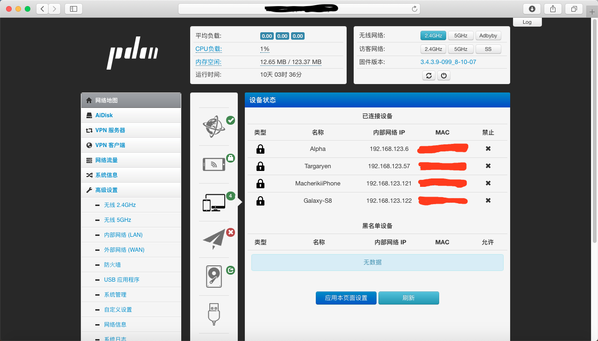
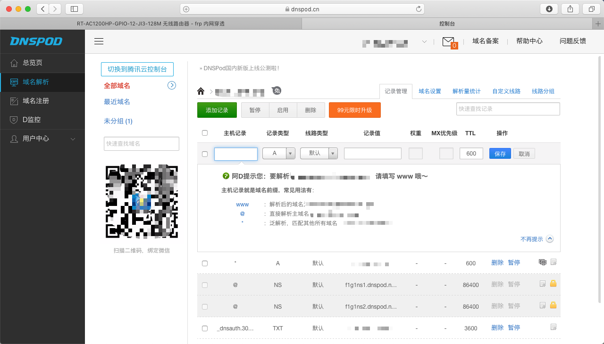
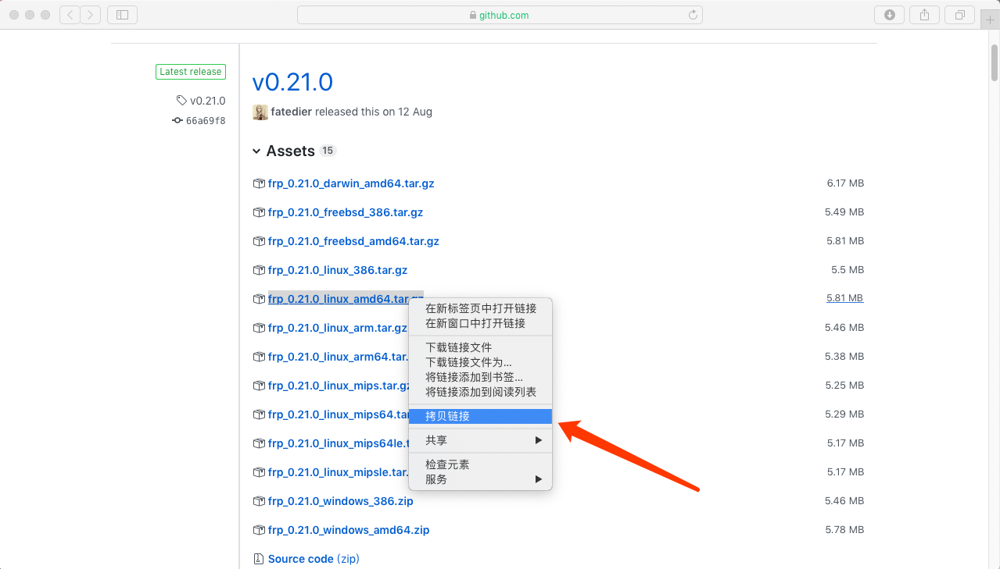
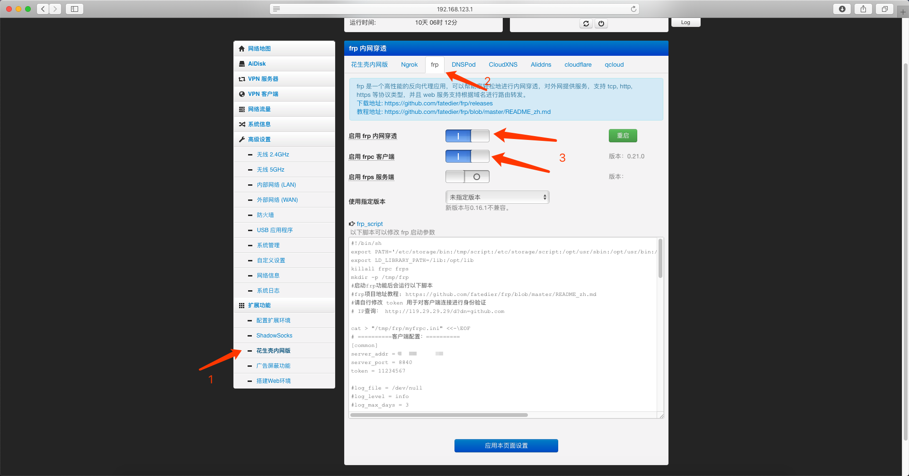
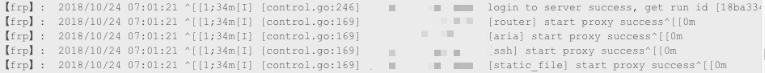

FRP内网穿透配置
设备环境
- 硬件：极路由3（HC5861，MT7620a）
- 固件：H大Padavan的老毛子固件
- 服务器：Aliyun学生服务器
前言
最近学校换了新的网络，在每个宿舍装了个锐捷的路由器，顺便把旧的网口给关闭了。极3在接了新的网口后网络体验并不好，想着极3的保修日期已所剩无多，便申请了开发者模式刷了H大的padavan固件玩玩。

很多新功能有木有！！于是我就接了个外接硬盘，配置了Aria2，FTP服务和Samba服务。便愉快地玩耍了2天之后，虽然这些功能在宿舍很好用，但是离开了局域网之后就用不了了。于是我研究了一下内网穿透，发现FRP内网穿透是一种不错的方法，接下来，FRP内网穿透搞起！
做FRP内网穿透需要以下原材料：一台能上网的电脑，一台有FRP功能的路由器(这里使用的是刷了H大padavan的极路由3)，一个有公网ip的服务器，一个已备案的域名。
第一步，对域名进行设置
打开自己域名的管理界面，这里使用的是Dnspod：

添加如下记录(剩下的参数全部默认即可)：
| 主机记录 | 记录类型 | 记录值 |
|---|---|---|
| www | A | 你的IP地址 |
| * | A | 你的IP地址 |
第二步，SSH连接服务器
使用wget命令下载FRP的包，FRP的Release版本下载地址在这里，选择对应的版本，右键拷贝链接，粘贴到终端回车开始下载。

第三步，解压安装FRP
使用tar -zxv 文件名A解压文件包，然后使用mv 文件名A /usr/bin/frp将其移动到指定目录并且重命名为文件夹frp。
第四步，添加FRP为开机自启服务。
cd /etc/systemd/system切换目录，vim frps.service新建一个文件并添加以下内容：
1 | [Unit] |
添加完成后esc退出编辑模式，按shift+冒号输入wq并回车保存并退出vim。输入systemctl start frps启动frp服务，关于frp常用的系统服务项命令如下：
| systemctl start frps | 启动FRP服务 |
|---|---|
| systemctl restart frps | 重启FRP服务 |
| systemctl stop frps | 停止FRP服务 |
| systemctl status frps | 查看FRP日志 |
第五步，配置FRPS文件
cd /usr/bin/frp切换到FRP根目录下，vim frps.ini编辑配置文件，具体的配置项请查阅README，我添加的配置如下：
1 | [common] |
我的配置项说明：
| token | FRP客户端与FRP服务器端通信的密码 |
|---|---|
| bind_port | FRP服务器端的TCP端口 |
| bind_udp_port | FRP服务器端的UDP端口 |
| vhost_http_port | 访问http服务的端口 |
| vhost_https_port | 访问https服务的端口 |
| dashboard_port | 访问FRP的dashboard端口 |
| dashboard_user | 访问dashboard时的用户名 |
| dashboard_pwd | 访问dashboard时的密码 |
| subdomain_host | 二级路由时的主域名 |
第六步，配置FRPC客户端
打开路由器的FRP配置页面。按照下图步骤启动FRP客户端：

修改客户端配置中的参数，服务端的参数无需修改，我的参数如下：
1 | [common] |
第一个项[common]是连接到FRP服务器的配置，按照自己在服务器端的配置来填写。
第二个项[router]是http协议的内网穿透，80端口是我的路由器管理界面端口，subdomian是二级路由地址，如果按照我的配置进行配置，配置完成后访问router.yourdomain.com:8842即可访问路由器的管理界面。
第三个项[ssh]是tcp协议的内网穿透，22端口是路由器的ssh端口，配置好后在终端输入ssh admin@www.yourdomain.com:8848即可ssh登录路由器。
应用该页面的设置，打开管理界面的log查看连接状态，若出现下图消息，则FRP内网穿透配置成功。

最后
到这里FRP内网穿透的基本配置就完成了，现在在其他网络环境中也可以对路由进行管理了，下一篇博客中将会为你带来Aria2的内网穿透+Aria2WebUI的配合使用，达到远程下载的目的。